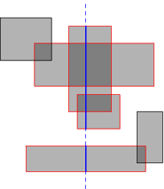
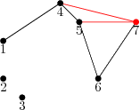

Member Count: 316,431 -
October 24, 2011
[Get Time]


 
|
A previous series of articles covered the basic tools of computational geometry. In this article I'll explore some more advanced algorithms that can be built from these basic tools. They are all based on the simple but powerful idea of a sweep line: a vertical line that is conceptually “swept” across the plane. In practice, of course, we cannot simulate all points in time and so we consider only some discrete points. In several places I'll refer to the Euclidean and Manhattan distances. The Euclidean distance is the normal, everyday distance given by Pythagoras' Theorem. The Manhattan distance between points (x1, y1) and (x2, y2) is the distance that must be travelled while moving only horizontally or vertically, namely |x1 − x2| + |y1 − y2|. It is called the Manhattan distance because the roads in Manhattan are laid out in a grid and so the Manhattan distance is the distance that must be travelled by road (it is also called the "taxicab distance," or more formally the L1 metric). In addition, a balanced
binary tree is used in some of the
algorithms. Generally you can just use a Closest pair Suppose that we have processed points 1 to N − 1 (ordered by X) and the shortest distance we have found so far is h. We now process point N and try to find a point closer to it than h. We maintain a set of all already-processed points whose X coordinates are within h of point N, as shown in the light grey rectangle. As each point is processed, it is added to the set, and when we move on to the next point or when h is decreased, points are removed from the set. The set is ordered by y coordinate. A balanced binary tree is suitable for this, and accounts for the log N factor.  To search for points closer than h to point N, we need only consider points in the active set, and furthermore we need only consider points whose y coordinates are in the range yN − h to yN + h (those in the dark grey rectangle). This range can be extracted from the sorted set in O(log N) time, but more importantly the number of elements is O(1) (the exact maximum will depend on the metric used), because the separation between any two points in the set is at least h. It follows that the search for each point requires O(log N) time, giving a total of O(N log N). Line segment intersections  To handle either of the horizontal line events, we simply need to add or remove an element from the set. Again, we can use a balanced binary tree to guarantee O(log N) time for these operations. When we hit a vertical line, a range search immediately gives all the horizontal lines that it cuts. If horizontal or vertical segments can overlap there is some extra work required, and we must also consider whether lines with coincident endpoints are considered to intersect, but none of this affects the computational complexity. If the intersections themselves are required, this takes O(N log N + I) time for I intersections. By augmenting the binary tree structure (specifically, by storing the size of each sub-tree in the root of that sub-tree), it is possible to count the intersections in O(N log N) time. In the more general case, lines need not be horizontal or vertical, so lines in the active set can exchange places when they intersect. Instead of having all the events pre-sorted, we have to use a priority queue and dynamically add and remove intersection events. At any point in time, the priority queue contains events for the end-points of line-segments, but also for the intersection points of adjacent elements of the active set (providing they are in the future). Since there are O(N + I) events that will be reached, and each requires O(log N) time to update the active set and the priority queue, this algorithm takes O(N log N + I log N) time. The figure below shows the future events in the priority queue (blue dots); note that not all future intersections are in the queue, either because one of the lines isn't yet active, or because the two lines are not yet adjacent in the active list.  Area of the union of rectangles 
We now know which rectangles are cut by the sweep line (red in the diagram), but we actually want to know the length of sweep line that is cut (the total length of the solid blue segments). Multiplying this length by the horizontal distance between events gives the area swept out between those two events. We can determine the cut length by running the same algorithm in an inner loop, but rotated 90 degrees. Ignore the inactive rectangles, and consider a horizontal sweep line that moves top-down. The events are now the horizontal edges of the active rectangles, and every time we cross one, we can simply increment or decrement a counter that says how many rectangles overlap at the current point. The cut length increases as long as the counter is non-zero. Of course, we do not increase it continuously, but rather while moving from one event to the next. With the right data structures, this can be implemented in O(N2) time (hint: use a boolean array to store the active set rather than a balanced binary tree, and pre-sort the entire set of horizontal edges). In fact the inner line sweep can be replaced by some clever binary tree manipulation to reduce the overall time to O(N log N), but that is more a problem in data structures than in geometry, and is left as an exercise for the reader. The algorithm can also be adapted to answer similar questions, such as the total perimeter length of the union or the maximum number of rectangles that overlap at any point. Convex hull Andrew's algorithm splits the convex hull into two parts, the upper and lower hull. Usually these meet at the ends, but if more than one points has minimal (or maximal) X coordinate, then they are joined by a vertical line segment. We'll describe just how to construct the upper hull; the lower hull can be constructed in similar fashion, and in fact can be built in the same loop. To build the upper hull, we start with the point with minimal X coordinate, breaking ties by taking the largest Y coordinate. After this, points are added in order of X coordinate (always taking the largest Y value when multiple points have the same X value). Of course, sometimes this will cause the hull to become concave instead of convex: 
The black path shows the current hull. After adding point 7, we check whether the last triangle (5, 6, 7) is convex. In this case it isn't, so we delete the second-last point, namely 6. The process is repeated until a convex triangle is found. In this case we also examine (4, 5, 7) and delete 5 before examining (1, 4, 7) and finding that it is convex, before proceeding to the next point. This is essentially the same procedure that is used in the Graham scan, but proceeding in order of X coordinate rather than in order of the angle made with the starting point. It may at first appear that this process is O(N2) because of the inner backtracking loop, but since no point can be deleted more than once it is in fact O(N). The algorithm over-all is O(N log N), because the points must initially be sorted by X coordinate. Manhattan minimum spanning tree We first break this down into a simpler problem. Standard MST algorithms for general graphs (e.g., Prim's algorithm) can compute the MST in O((E + N) log N) time for E edges. If we can exploit geometric properties to reduce the number of edges to O(N), then this is merely O(N log N). In fact we can consider, for each point P, only its nearest neighbors in each of the 8 octants of the plane (see the figure below). The figure shows the situation in just one of the octants, the West-Northwest one. Q is the closest neighbour (with the dashed line indicating points at the same Manhattan distance as Q), and R is some other point in the octant. If PR is an edge in a spanning tree, then it can be removed and replaced by either PQ or QR to produce a better spanning tree, because the shape of the octant guarantees that |QR| ≤ |PR|. Thus, we do not need to consider PR when building the spanning tree.  This reduces the problem to that of finding the nearest neighbour in each octant. We'll just consider the octant shown; the others are no different and can be handled by symmetry. It should be clear that within this octant, finding the nearest neighbour is equivalent to just finding the point with the largest value of x − y, subject to an upper bound on x + y and a lower bound on y, and this is the form in which we'll consider the problem. Now imagine for the moment that the lower bound on y did not exist. In this case we could solve the problem for every P quite easily: sweep through the points in increasing order of x + y, and Q will be the point with the largest x − y value of those seen so far. This is where the divide-and-conquer principle comes into play: we partition the point set into two halves with a horizontal line, and recursively solve the problem for each half. For points P in the upper half, nothing further needs to be done, because points in the bottom half cannot play Q to their P. For the bottom half, we have to consider that by ignoring the upper half so far we may have missed some closer points. However, we can take these points into account in a similar manner as before: walk through all the points in x + y order, keeping track of the best point in the top half (largest x − y value), and for each point in the bottom half, checking whether this best top-half point is better than the current neighbour. So far I have blithely assumed that any set of points can be efficiently partitioned on Y and also walked in x + y order without saying how this should be done. In fact, one of the most beautiful aspects of this class of divide-and-conquer plus line-sweep algorithms is that it has essentially the same structure as a merge sort, to the point that a merge-sort by x + y can be folded into the algorithm in such a way that each subset is sorted on x + y just when this is needed (the points initially all being sorted on Y). This gives the algorithm a running time of O(N log N). The idea of finding the closest point within an angle range can also be used to solve the Euclidean MST problem, but the O(N log N) running time is no longer guaranteed in the worst cases, because the distance is no longer a linear equation. It is actually possible to compute the Euclidean MST in O(N log N) time, because it is a subset of the Delaunay triangulation. Sample problems
Conclusion References
|
|
|
Home |
About TopCoder |
Press Room |
Contact Us |
Careers |
Privacy |
Terms
Competitions | Cockpit |
| Copyright TopCoder, Inc. 2001-2011 |